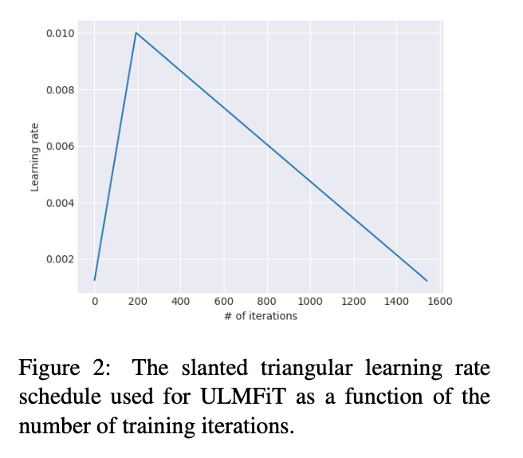

The LM
The LM is the Language Model. It is the basics which is very general purpose, and allows you to save training time and utilize transfer learning properties, because much of language (similarly to vision) follows elementary structures, constructed to create more complex patterns.
UMLFiT’s LM is trained on a large corpus of Wikipedia (thanks wikipedia!) articles. Once a LM has been learned (or downloaded in the pretrained case), the only training left to do is the adaptation to the idiosyncrasies of the target data. This saves much time, and allows for better models on a larger amount of domains.
Discriminative fine-tuning
Different layers capture different types of information, and by using different learning rates, you can achieve a better overall model.
Slanted triangular learning rates
Also, the paper proposes the use of slanted triangular learning rates. See below:
